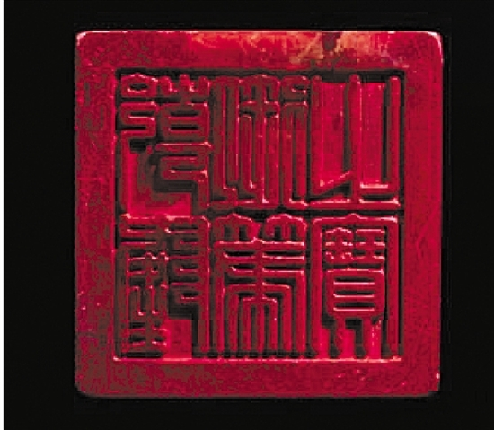
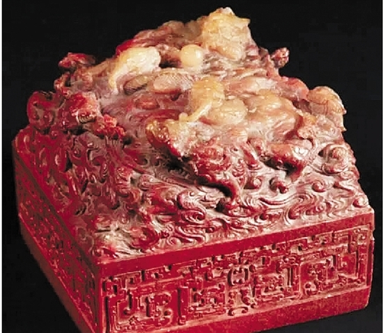

这是一条引爆网络的消息。
北京时间12月14日晚上8点，法国巴黎德鲁奥拍卖行精选之重器--清乾隆“乾隆御笔之宝”玺开拍，在经过多轮竞价之后，由中国神秘买家以1750万欧元成交价获得，加上佣金后2100万欧元，折合人民币超过1.6亿元。
这个神秘买家是谁?钱江晚报记者多方求证后确定，正是资深古玩收藏家、温商杜圣博用手机远程“遥控”助理拍下了这一珍贵的玉玺。
昨天，钱江晚报记者联系到了杜圣博本人。
“千金难买心头好。对我而言，这样的拍品是无价的。”杜圣博说。
乾隆玉玺在法国的拍卖现场

此次拍卖的乾隆玉玺

温商手机越洋遥控喊价

起拍50万欧元，1750万拿下
“一开始的想法就是，不管多少代价都要拿下。”谈起此次成功拍下“乾隆玉玺”，电话那头的杜圣博难掩兴奋。
这次拍卖经历，杜圣博说，这是他接触古玩这一行以来最激烈的一次，相当于一场“华山论剑”:
“开拍前，需要押金5万欧元才能拿到一张手举牌。玉玺的起拍价为50万欧元，预估价在100万欧元以下，但在我和一些在场的其他收藏家看来，玉玺的收藏价值远远高出这个价格，所以在整场叫价中，大家对价格都是紧咬着不放。其中，最想得到这件拍品的，是几个欧洲人。
我是以跳拍的方式进行的，别人喊50万欧元，我直接跳喊200万欧元，希望以此打乱对手的布局。
中间有一度没有人加价了，我以为拍到了，结果在落槌的最后一刻，还是有买家出了更高价。当时我就想，一定要死磕到底。
最终，我们一直咬到1750万欧元，才最终落槌。另外加上佣金，总计2100万欧元。”
这一落槌，不仅敲出了历史上拍出的乾隆玉玺的最高价位，更是创造了福建寿山石的价格奇迹。
网拍国外藏品再出手
这套路杜圣博玩得很溜
据相关媒体报道，这块玉玺原本由一个法国家庭拥有，这个家庭的先祖在19世纪末在海军担任医生，多次随军前往中国，估计在当时取得了玉玺。
随后，玉玺一直保存在这个家族的手中。而根据德鲁奥拍卖行提供的资料，这位法国海军军官所收藏的日本绘画大师葛饰北斋的两幅作品“富岳三十六景”和“神奈川冲浪里”也同时拍卖。
一个多世纪后，这块玉玺再次回到了中国人的手中。
“这次真的圈内圈外都在关注，手机电话都爆了。”杜圣博告诉记者，自己买卖过这么多次，这的确是受关注最高的一次。“既然这个消息肯定藏不住，那我们不如勇敢地告诉全世界，很多人不敢拿，拿不了的东西，我们温州人可以。”
其实，通过手机和网络在国外拍卖行远程“淘宝”对杜圣博来说已经是驾轻就熟。2003年开始，他就陆续通过“网拍”拍下国外的藏品再转手，而逐渐在国内的古玩界闯出了名号，业内人都称呼他为“豆芽哥”。
“拍下乾隆玉玺，也是为了能给我们温州人在文化方面正正名。”1971年出生在苍南金乡的杜圣博，从小跟着家人在广州从事印刷生意，如今也打拼出自己的事业。
现在杜圣博已经很少自己跑去国外，大都驻守在北京的大本营，而从国外拍卖、购买古董的工作，几乎都交给了杜圣博遍布在各个国家的助理和买手，“他们基本都是温州人，老乡之间彼此信任。”
1.6亿元拍得玉玺，贵不贵
他说:千金难买心头好
几天来，杜圣博以1.6亿元的天价拍下乾隆玉玺，在网上引起了热议。有人说，这样的做法，可谓“为国争光”了，但也有行家表示，这样的价格，有些虚高了。
在杜圣博看来，古玩收藏，一向都是“千金难买心头好”，“一件古董的价值不能单独以成交价格衡量，最主要是在于你对它的喜爱程度。”杜圣博说，“且不论背后的意义和故事，乾隆玉玺本身就非常漂亮，我是发自内心的喜欢。”
“乾隆御笔之宝本身是国宝级的藏品。一件古董背后所蕴含的文化价值和故事，才是更吸引我们去拍下来的原因。”
钱江晚报记者了解到，这枚皇家御玺四周浅浮雕夔龙纹，印章上部巧雕九龙腾飞于祥云间追逐宝珠的生动造型。在中国传统文化中，九代表阳气最盛，而龙则寓意皇家至尊。
事实上，明、清两代是中国印章文化的鼎盛时期。清朝十二位帝王中，无论质量数量，都以乾隆宝玺为最，其一生共制印玺1800余枚，其中佚失700余枚，1000余枚现藏于北京故宫博物院。
“虽然乾隆玉玺留下的数量并不算少，但各个玉玺，由于质地、作用的不同，价格也是明显不同的。”杜圣博说，前段时间，他也拍下过一块乾隆玉玺，花了30万欧元左右，“但相比这块，仅以当时的作用来说，差别也是很大的。”
杜圣博说，这块玉玺也是他在拍卖行里拍下的最高价藏品，目前打算作个人收藏。“但在我条件允许的情况下，我很愿意将它拿出来捐献给国家。”杜圣博说，“如果有人想替我捐献这件拍品，我也很愿意以实际拍到的价格，转手给他。”